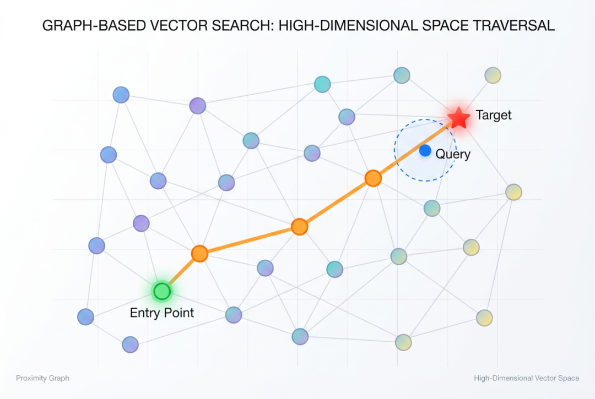
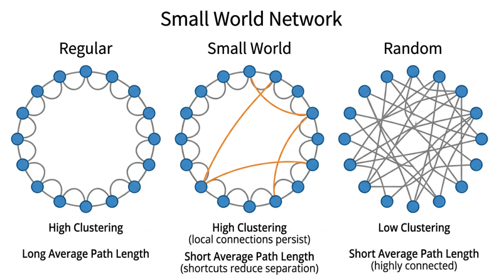
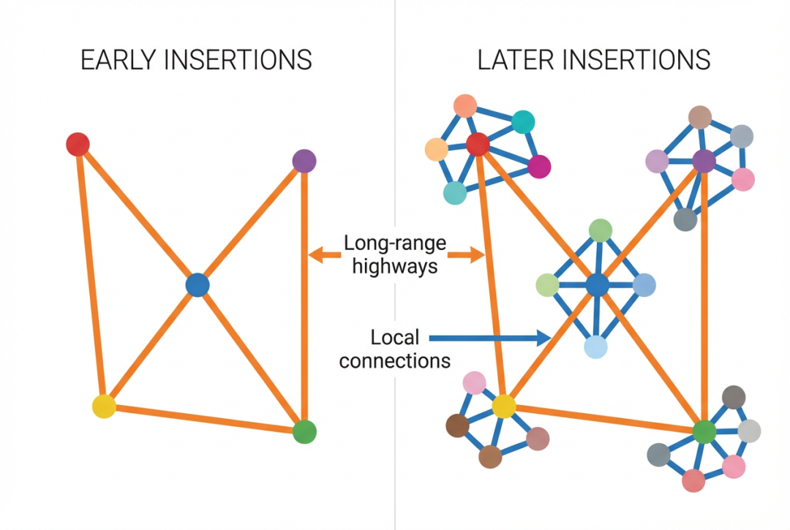
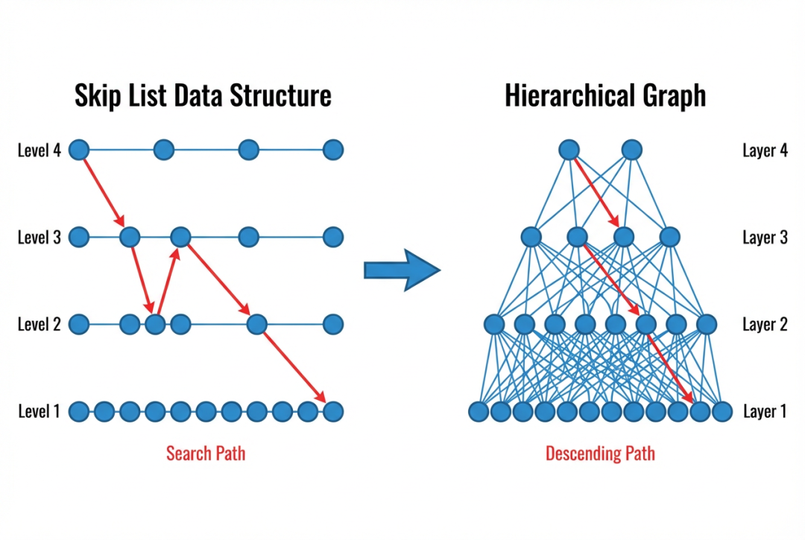
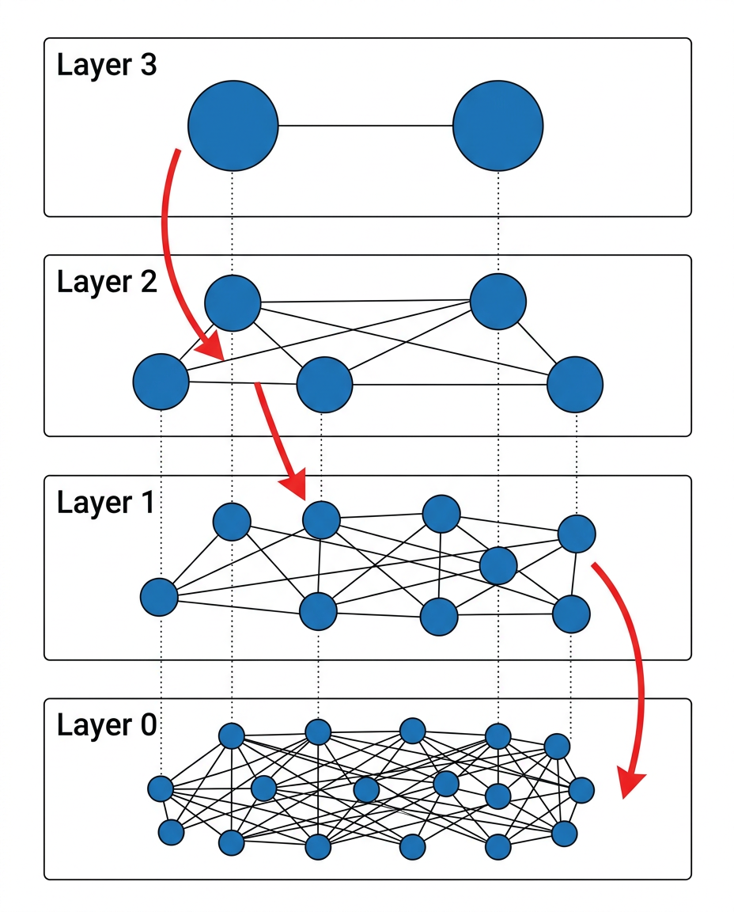

引言
想象你身处一座陌生的大城市，急需找到最近的咖啡店。如果城市只有一条街道，大可以挨家挨户看过去；可面对纵横交错的成千上万条街巷，逐一排查的代价显然无法接受。现实中我们会怎么做呢？毫无疑问的，打开地图App...它不会替你走遍每一条路，而是借助精心组织的空间索引和路网结构，在几毫秒内就把你"导航"到目的地。
在处理海量向量数据时，我们面临的挑战如出一辙：当数据库中有数以亿计的高维向量时，如何从这片"向量海洋"中快速捞出与查询最相似的那几个？逐一比对就像在大城市里挨家挨户寻找，理论上可行，实际上不可承受。这正是近似最近邻搜索（Approximate Nearest Neighbor Search, ANNS）可以大显身手的领域，它的核心使命，就是为机器构建一张高效的"导航地图"，使其能在高维空间中迅速定位目标。
在众多 ANNS 算法中，基于图的方法以其出色的搜索精度和查询性能脱颖而出，而HNSW（Hierarchical Navigable Small World）更是成为了现在流行的向量搜索算法，被 Milvus、Pinecone 等主流向量数据库广泛采用。本文将从图结构的基本思想出发，逐步深入 NSW 和 HNSW 的核心原理，剖析其索引构建与搜索算法的设计。
1. 图结构与向量搜索
1.1 高维向量搜索的困境
实现精确的最近邻搜索，最直观的方式是通过暴力搜索（Brute-force）：将查询向量与数据库中的每一个向量逐一计算距离，返回最近的 k 个。这种方法的时间复杂度为 O(N * D)，其中 N 是数据规模，D 是向量维度。当 N 达到千万甚至亿级以上时，暴力搜索的延迟将变得不可接受。
为了加速搜索，学术界和工业界提出了多种索引方案，主要可以分为以下几类：
- tree-based：如 KD-Tree 和 Ball Tree，通过递归地将空间划分为子区域来缩小搜索范围。然而，当向量维度超过 20 左右时，这些方法会遭遇"维度灾难"（Curse of Dimensionality）——空间划分的效率急剧下降，搜索性能退化到接近暴力搜索的水平。
- hash-based：如 LSH（Locality-Sensitive Hashing），通过设计特殊的 hash function，将相似的向量映射到同一个桶中。LSH 在理论上有严格的概率保证，但在实践中通常需要大量的 hash table 来达到较高的召回率，这导致内存开销显著增大。
- cluster-based：如 PQ 和 IVF，通过压缩向量和划分搜索空间来实现加速。这类方法在内存效率上具有优势，但在搜索精度和性能上通常逊色于基于图的方法。
1.2 为什么选择图？
graph-based 的方法提供了一种截然不同的思路：将每个向量视为图中的一个节点，在相似的向量之间建立"边"连接，从而构成一个近邻图（Proximity Graph）。搜索时，从图中的某个入口点出发，沿着边贪心地向查询向量方向移动，逐步逼近真正的最近邻。

图1: 基于图的向量搜索
这种方法的核心优势在于：
第一，自适应的搜索路径。与 tree-based 的固定空间划分不同，graph-based 的搜索路径是由数据本身的分布决定的。每一步移动都选择当前邻居中距离查询最近的节点，这使得搜索过程能够自然地适应高维空间中数据的复杂结构。
第二，对维度不敏感。graph-based 不依赖于空间划分或坐标轴投影，而是直接基于点与点之间的距离关系构建索引。因此，即使在维度很高的情况下，graph-based仍然能够保持稳定的搜索性能，这是 tree-based 无法企及的。
第三，优异的精度和速度权衡。大量实验表明，在相同的召回率下，graph-based 所需的查询时间通常远少于其它类型的索引。
然而，graph-based 方法的设计面临一个关键挑战：如何构建一个既能支持高效贪心搜索、又不需要过多边连接的图？如果图过于稀疏，贪心搜索可能陷入局部最优；如果图过于稠密，每一步需要计算的距离过多，搜索效率反而下降。如何平衡搜索性能与搜索质量，正是NSW 和 HNSW 所要解决的核心问题。
2. NSW：可导航的小世界图
2.1 从小世界现象说起
1967年，社会心理学家 Stanley Milgram 进行了一个著名的实验：他让美国中西部的志愿者通过熟人链将一封信转寄给波士顿的一位目标人物，结果发现，成功送达的信件平均只经过了大约六次的转手——这就是广为人知的"六度分隔"现象。
更令人惊奇的是，参与者在转寄时并不知道完整的社交网络结构，他们只是基于自己对目标的了解，选择自己认识的人中"最可能认识目标"的那个人来转寄。
1998年，Watts 和 Strogatz 在 Nature 上发表了开创性的论文，提出了小世界网络模型。该模型指出，一个网络只要同时具备两个特性——高聚类系数（局部连接紧密）和短平均路径长度（全局可达性好），就构成一个小世界网络。直观来看，高聚类意味着"你朋友的朋友很可能也是你的朋友"，而短路径意味着任意两个节点之间只需少数几跳就能到达。

图2: 小世界网络
2000年，Kleinberg 进一步从理论上证明：当网络中的长距离连接遵循特定的概率分布（与距离的幂次成反比）时，简单的贪心路由算法能够在 O(log²N) 的步数内到达任意目标节点，这一结论为基于小世界图的向量搜索奠定了理论基础。
2.2 NSW 的核心思想
NSW（Navigable Small World）算法由 Malkov 等人于2014年提出，发表在 Information Systems 期刊上。其核心思想是通过一种简单的增量构建策略，自然地形成一个具有小世界特性的近邻图，从而支持高效的贪心搜索。
NSW 的关键洞察在于：如果我们按照随机顺序逐个插入向量，并且每次插入时通过当前图的贪心搜索找到最近邻作为连接对象，那么早期插入的节点会自然地成为长距离连接。这是因为在图的早期阶段，节点数量少，贪心搜索找到的"最近邻"，实际上可能在向量空间中距离较远，这些连接恰好充当了跨越大范围空间的"高速公路"（highway），使得搜索可以快速从图的一个区域跳到另一个区域。随着更多节点的插入，新建立的连接会越来越局部化，从而提供精细的局部搜索能力。长距离连接和短距离连接的自然共存，正是 NSW 具备可导航性（navigability）的根本原因。

图3: NSW
2.3 NSW 的索引构建算法
NSW 的构建过程非常直观。给定一组待索引的向量集合，算法按照随机顺序逐一处理每个向量：
步骤一：贪心搜索当前图。对于待插入的新向量 q，从图中随机选取若干入口点（entry points），以 q 为目标执行多起点贪心搜索（multi-start greedy search）。搜索从每个入口点开始，反复检查当前节点的所有邻居，如果某个邻居比当前节点更接近 q，则更新候选最近邻；如果没有更近的邻居可更新，则当前找到的候选者为该搜索路径的局部最优解。从多个入口点收集到的局部最优解中，选出距离 q 最近的 f 个节点作为候选最近邻。
步骤二：建立双向连接。将新节点 q 与搜索找到的 f 个最近邻之间建立双向边。这意味着 q 会出现在这 f 个节点的邻居列表中，反之亦然。
构建算法的伪代码如下：
NSW-INSERT(graph G, new node q, num_connections f, num_starts w):
candidates <- ∅
for i = 1 to w :
entry <- random node from G
result <- GREEDY-SEARCH(G, entry, q)
candidates <- candidates ∪ result
neighbors <- f closest nodes to q from candidates
for each node n in neighbors:
add edge (q, n) to G // 双向边其中GREEDY-SEARCH的逻辑为：
GREEDY-SEARCH(graph G, start_node s, query q):
current <- s
while True:
next <- argmin_{v ∈ neighbors(current)} distance(v, q)
if distance(next, q) ≥ distance(current, q):
return current // 到达局部最优
current <- next一个值得注意的细节是插入顺序的随机化。如果数据按照某种特定顺序排列（比如按某个维度排序），那么早期插入的节点之间的长距离连接将缺乏多样性。随机化确保了长距离连接能够均匀地覆盖向量空间的各个方向，这对搜索效率至关重要。
2.4 NSW 的搜索算法
搜索过程与构建过程中的贪心搜索基本一致，但通常会使用更多的入口点以提高召回率。给定查询向量 q 和目标返回数量 k：
- 从图中随机选择 w 个入口点
- 从每个入口点出发，执行贪心搜索直到到达局部最优
- 将所有搜索路径上访问过的节点加入候选集合
- 从候选集合中返回距离 q 最近的 k 个节点
增大入口点数量 w 可以提高召回率（减少陷入不良局部最优的概率），但也会增加搜索时的距离计算次数，因此，需要在精度和速度之间做权衡。
2.5 NSW 的优缺点分析
优点：NSW 的算法实现简洁优雅，构建和搜索的核心逻辑都基于贪心搜索，易于理解和工程实现。更重要的是，它通过一种无需显式设计的方式自然产生了长距离和短距离连接的混合结构，这种可导航性是 NSW 的精妙之处。相比于 KD-Tree 等方法，NSW 在高维空间中表现更加稳健，不受维度灾难的影响。
缺点：NSW 存在几个显著的局限性。
首先，是节点度数分布不均匀的问题，早期插入的节点由于承担了大量长距离连接的角色，其度数（连接数）会远高于后期插入的节点。随着图规模的增长，这些节点的度数以 O(log N) 的速度增长，这将导致两个问题，一是这些高度数节点在搜索过程中需要计算大量向量距离，成为性能瓶颈；二是如果这些节点被删除或损坏，会严重影响图的连通性和搜索质量。
其次，是搜索复杂度的问题。在 NSW 中，贪心搜索的平均路径长度为 O(log N)，但每一步需要检查的邻居数量也随着图规模对数增长（因为早期节点的高度数），这使得总的搜索复杂度达到 O(logkN) 的距离计算量，对于大规模数据集，这一复杂度仍有较大的优化空间。
最后，是路由效率的问题。NSW 使用单层图结构，这意味着长距离导航和局部精细搜索都在同一个图上进行，长距离连接的存在虽然加速了全局定位，但也增加了局部搜索时的干扰，在接近目标时，搜索仍然可能跳转到远处的长距离连接，浪费计算资源。
3. HNSW：分层可导航的小世界图
3.1 从 NSW 到 HNSW 的动机
NSW 的局限性本质上源于它试图在单一图结构中同时承载两种功能：远距离导航（快速定位到目标附近的区域）和局部精细搜索（在目标附近找到真正的最近邻）。这两种功能对图的连接结构有着相互矛盾的需求——远距离导航需要稀疏的长距离连接，而局部搜索需要稠密的短距离连接。
Malkov 和 Yashunin 在2018年（正式发表于2020年IEEE TPAMI）提出了HNSW算法，其核心思想是受到 Skip List（跳表）数据结构的启发，将 NSW 的单层图扩展为多层分级结构，在不同层次上分别处理不同尺度的导航需求。
要理解 HNSW 的设计灵感，有必要先回顾一下 Skip List 这一经典数据结构。考虑一个最基本的场景：在一个有序链表中查找某个元素，普通链表只能从头到尾逐个遍历，时间复杂度为 O(N)。Skip List 的核心思想是在原始链表之上，概率性地为部分元素创建多级索引。具体来说，每个元素在插入时通过抛硬币的方式决定自己的层数——以 1/2 的概率升入上一层，这样一来，第 0 层（底层）包含所有 N 个元素、第 1 层大约包含 N/2 个元素、第 2 层大约 N/4 个，以此类推，顶层通常只剩下寥寥几个元素。
搜索时，算法从最顶层的头节点开始。在当前层中尽可能向右移动（即跳过尽可能多的元素），直到下一个节点的值大于目标值时停下来，然后下降到下一层继续同样的操作。由于高层的节点稀疏、跨度大，每一步能跳过大量元素，起到"粗定位"的作用；低层节点稠密、跨度小，负责"精搜索"。整个搜索过程的时间复杂度为 O(log N)。
HNSW 将这个思想从一维有序结构推广到高维向量空间：构建一个多层图，顶层包含极少的节点和长距离连接用于全局导航，底层包含所有节点和短距离连接用于精确搜索。每个节点被随机分配到一个最大层级，出现在从第 0 层到该层级的所有层上。

图4: Skip List与分层图
3.2 HNSW 的索引构建算法
HNSW 的构建过程是在 NSW 的基础上进行改良。对于每个待插入的向量，算法执行以下步骤：
步骤一：确定节点的最大层级。使用一个指数级衰减的概率分布随机确定新节点 q 的最大层级 l：
l = ⌊ -ln(uniform(0, 1)) * mL ⌋其中 mL 是一个归一化因子，通常设为 1 / ln(M)，M 是每层的最大连接数。这个公式保证了层级越高，节点越少：第 i 层的节点数量大约是第 i - 1 层的 1 / M。大多数节点的最大层级为 0（即只存在于底层），极少数节点会出现在高层。
步骤二：从顶层开始搜索插入位置。从当前图的最高层的入口节点出发，执行贪心搜索。在高于 l 的每一层中，只进行简单的贪心搜索（ef = 1，即只保留一个最佳候选邻居），目标是快速定位到新节点 q 的大致区域。
步骤三：在目标层级及以下逐层插入连接。从第 l 层开始到第 0 层，在每一层执行更精细的搜索，搜索的候选列表大小为 efConstruction（一个控制构建索引质量的参数）。在每一层，选择与 q 最相似的 M 个节点建立双向连接。
步骤四：连接数限制。当一个已有节点因为新插入而获得了过多连接时，需要将其连接数修剪到不超过 Mmax（底层为 Mmax0，通常设为 2 * M）。

图5: HNSW
构建过程的核心伪代码如下：
HNSW-INSERT(graph G, new node q, M, Mmax, efConstruction, mL):
l <- ⌊ -ln(uniform(0, 1)) * mL⌋ // 随机确定层级
ep <- entry_point of G
L <- current max level of G
// 第一阶段：在高层快速定位
for lc = L down to l + 1:
ep <- SEARCH-LAYER(G, q, ep, ef = 1, layer = lc)
// 第二阶段：在目标层级及以下逐层连接
for lc = min(L, l) down to 0:
candidates ← SEARCH-LAYER(G, q, ep, efConstruction, layer=lc)
neighbors ← SELECT-NEIGHBORS(q, candidates, M)
for each n in neighbors:
add bidirectional edge (q, n) at layer lc
if degree(n, lc) > Mmax:
SHRINK-CONNECTIONS(n, Mmax, lc) // 修剪多余连接
ep <- candidates
if l > L:
set q as new entry_point3.3 HNSW的搜索算法
HNSW 的搜索过程体现了"从粗到细"的分层思想，自顶向下逐步精化搜索范围：
阶段一：高层快速定位。从最高层的入口节点开始，在每一层执行贪心搜索（ef = 1）。在这些高层中，节点稀疏，连接跨度大，每一步能够在向量空间中实现大范围的跳跃，这一阶段的作用类似于在地图上先定位到正确的城市。
阶段二：底层精细搜索。到达第 0 层后，切换为使用更大的 efSearch（搜索时的候选列表大小）进行 beam search 风格的搜索。这一阶段维护一个大小为 efSearch 的候选优先队列：从队列中取出距离查询最近的未访问节点，检查其所有邻居，将比"当前候选集中最远节点"更近的邻居加入候选集。当所有候选节点都已被访问时，搜索终止。最终从候选集中返回距离查询 q 最近的 k 个节点。
搜索伪代码如下：
HNSW-SEARCH(graph G, query q, K, efSearch):
ep <- entry_point of G
L <- max level of G
// 高层：贪心定位
for lc = L down to 1:
ep <- SEARCH-LAYER(G, q, ep, ef = 1, layer = lc)
// 底层：精细搜索
candidates <- SEARCH-LAYER(G, q, ep, efSearch, layer = 0)
return K nearest from candidates搜索时间复杂度为 O(log N) 的距离计算量，直观理解可以是：在 HNSW 中，每一层的搜索步数是常数级的（虽然每层的节点数是上一层的 M 倍，但搜索只需遍历 O(1) 个节点来定位正确区域），而层数为 O(log N)，所以总搜索复杂度为 O(log N)。
3.4 HNSW 的关键设计解析
为什么分层是有效的？HNSW 的分层结构从根本上解决了 NSW 中远距离导航与局部搜索之间的矛盾。在 NSW 中，长距离连接和短距离连接混杂在同一层，搜索算法无法区分当前阶段应该优先利用哪种连接，而在 HNSW 中，高层的节点天然稀疏，它们之间的连接跨度大，专门负责远距离导航；低层节点稠密，连接紧密，专门负责精细搜索。这种"关注点分离"（separation of concerns）使得每个层级上的搜索都能最高效地各司其职。
指数衰减的层级分配。节点层级的指数级衰减分布是 HNSW 设计中的另一个精妙之处，它确保了越高的层级包含越少的节点，形成类似金字塔的结构。顶层可能只有几个节点，充当全局路标；最底层包含所有节点，提供完整的搜索精度，这种结构使得高层搜索的开销极小（因为节点少），同时不影响底层的搜索质量。
3.5 HNSW 的优缺点分析
优点：HNSW 有优秀的搜索性能。在 ann-benchmarks 的标准测试中，HNSW 在各种数据集和维度设置下一致地表现出业界领先的精度和速度权衡，其 O(log N) 的搜索复杂度使其在大规模数据集上也能保持毫秒级的查询延迟。通过调节 efSearch 参数，用户可以灵活地在精度和速度之间做出权衡，而无需重建索引，这在实际生产环境中非常实用。此外，HNSW 的构建过程天然支持增量更新，新向量可以在不重建整个索引的情况下被插入。
缺点：HNSW 最大的缺点是内存开销。由于需要存储多层图结构和所有原始向量（用于距离计算），HNSW 的内存占用较高。对于一个包含 N 个 D 维向量、每节点 M 个连接的 HNSW 索引，内存开销大约为 N * (D * 4 + M * 8 * 层数均值) bytes，这在大规模场景下容易成为瓶颈。虽然可以结合量化技术（如 BQ、SQ）来压缩存储的向量，但这也会引入额外的精度损失。其次，HNSW 对删除操作的支持不够友好，简单地删除一个节点会在图中留下"空洞"，影响搜索路径的连通性。虽然可以通过标记删除（lazy deletion）来缓解，但长时间的频繁删除仍然会降低索引质量，需要定期重建索引。
4. NSW 与 HNSW 的对比总结
5. 小结
从 NSW 到 HNSW 的演进，体现了一种优雅的设计哲学：观察自然现象（社交网络中的小世界特性）-> 提取核心原理（贪心可导航性）-> 工程化实现（增量构建的 NSW 图）-> 发现瓶颈（单层结构的扩展性限制）-> 借鉴经典数据结构（Skip List 的分层思想）-> 融合创新（HNSW）。
HNSW 的流行也揭示了一个道理：在高维近似搜索这个看似需要复杂数学工具的领域，一个精心设计的图结构配合简单的贪心策略，就能够达到优秀的搜索质量和搜索性能，并且能够实际生产环境中得到广泛应用。
参考文献
- [1] Weber, R., Schek, H. J., & Blott, S. (1998). A quantitative analysis and performance study for similarity-search methods in high-dimensional spaces. VLDB, 98, 194-205.
- [2] Andoni, A., & Indyk, P. (2006). Near-optimal hashing algorithms for approximate near neighbor in high dimensions. FOCS, 459-468.
- [3] Aumüller, M., Bernhardsson, E., & Faithfull, A. (2020). ANN-Benchmarks: A benchmarking tool for approximate nearest neighbor algorithms. Information Systems, 87, 101374.
- [4] Watts, D. J., & Strogatz, S. H. (1998). Collective dynamics of 'small-world' networks. Nature, 393(6684), 440-442.
- [5] Kleinberg, J. (2000). Navigation in a small world. Nature, 406(6798), 845.
- [6] Malkov, Y., Ponomarenko, A., Logvinov, A., & Krylov, V. (2014). Approximate nearest neighbor algorithm based on navigable small world graphs. Information Systems, 45, 61-68.
- [7] Malkov, Y. A., & Yashunin, D. A. (2020). Efficient and robust approximate nearest neighbor search using Hierarchical Navigable Small World graphs. IEEE Transactions on Pattern Analysis and Machine Intelligence, 42(4), 824-836.
- [8] Milgram, S. (1967). The small world problem. Psychology Today, 2(1), 60-67.